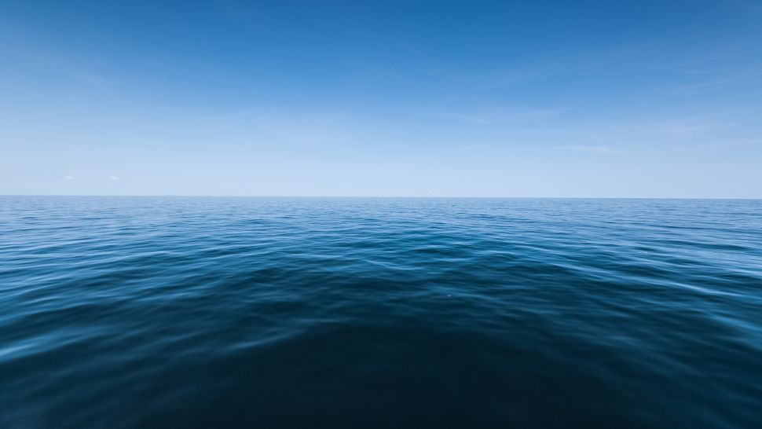

Water, Water Everywhere
April 19, 2020
1.5 billion-year-old Earth had water everywhere, but not one continent, study suggests
What did Earth look like 3.2 billion years ago? New evidence suggests the planet was covered by a vast ocean and had no continents at all.
Continents appeared later, as plate tectonics thrust enormous, rocky land masses upward to breach the sea surfaces, scientists recently reported. They found clues about this ancient waterworld preserved in a chunk of ancient seafloor, now located in the outback of northwestern Australia.
Around 4.5 billion years ago, high-speed collisions between dust and space rocks formed the beginnings of our planet: a bubbling, molten sphere of magma that was thousands of miles deep. Earth cooled as it spun; eventually, after 1,000 to 1 million years, the cooling magma formed the first mineral crystals in Earth's crust. Meanwhile, Earth's first water may have been carried here by ice-rich comets from outside our solar system, or it may have arrived in dust from the cloud of particles that birthed the sun and its orbiting planets, around the time of Earth's formation.
When Earth was a hot magma ocean, water vapor and gasses escaped into the atmosphere. "It then rained out from the atmosphere as conditions got cool enough," said lead study author Benjamin Johnson, an assistant professor in the Department of Geological and Atmospheric Sciences at Iowa State University.We can't really say what the source of the water is from our work, but we do suggest that whatever the source, it was present when the magma ocean was still around," Johnson told Live Science in an email.
In the new study, Johnson and co-author Boswell Wing, an associate professor of geological sciences at the University of Colorado Boulder, turned to Panorama's unique landscape in the Australian outback. Its rocky scenery preserves a hydrothermal system dating to 3.2 billion years ago, "and records the entire ocean crust from the surface down to the heat engine that drove circulation," Johnson said
Preserved in that craggy seafloor were different versions, or isotopes, of oxygen; over time, the relationship between these isotopes can help scientists decode shifts in ancient ocean temperature and global climate.
However, the scientists uncovered something unexpected through their analysis of more than 100 sediment samples. They found that 3.2 billion years ago, oceans held more oxygen-18 than oxygen-16 (the latter is more common in the modern ocean). Their computer models showed that on a global scale, continental land masses leach oxygen-18 from the oceans. In the absence of continents, the oceans would carry more oxygen-18. And the ratio between these two oxygen isotopes hinted that at the time, there were no continents at all, the study found. "This value is different than the modern ocean in a way that can be explained most easily by a lack of emergent continental crust," Johnson said in the email.
Other researchers have previously proposed the idea that Earth was once ocean covered, Johnson said. However, there's less agreement about how much of that crust was visible above sea level. This new discovery "provides actual geochemical constraints on the presence of land above sea level," he explained. The prospect of an ancient waterworld Earth also offers a new perspective on another intriguing question: where the planet's earliest forms of life appeared and how they evolved, the researchers wrote in the study. There are two major camps for the origin of life: hydrothermal vents and ponds on land," Johnson said. "If our work is accurate, it means the number of environments on land for life to emerge and evolve was really small or absent until sometime after 3.2 billion years ago."
Around 4.5 billion years ago, high-speed collisions between dust and space rocks formed the beginnings of our planet: a bubbling, molten sphere of magma that was thousands of miles deep. Earth cooled as it spun; eventually, after 1,000 to 1 million years, the cooling magma formed the first mineral crystals in Earth's crust.
When Earth was a hot magma ocean, water vapor and gasses escaped into the atmosphere. "It then rained out from the atmosphere as conditions got cool enough," said lead study author Benjamin Johnson, an assistant professor in the Department of Geological and Atmospheric Sciences at Iowa State University.
In the new study, Johnson and co-author Boswell Wing, an associate professor of geological sciences at the University of Colorado Boulder, turned to Panorama's unique landscape in the Australian outback. Its rocky scenery preserves a hydrothermal system dating to 3.2 billion years ago, "and records the entire ocean crust from the surface down to the heat engine that drove circulation," Johnson said.
However, the scientists uncovered something unexpected through their analysis of more than 100 sediment samples. They found that 3.2 billion years ago, oceans held more oxygen-18 than oxygen-16 (the latter is more common in the modern ocean). Their computer models showed that on a global scale, continental land masses leach oxygen-18 from the oceans. In the absence of continents, the oceans would carry more oxygen-18. And the ratio between these two oxygen isotopes hinted that at the time, there were no continents at all, the study found.
Other researchers have previously proposed the idea that Earth was once ocean covered, Johnson said. However, there's less agreement about how much of that crust was visible above sea level.